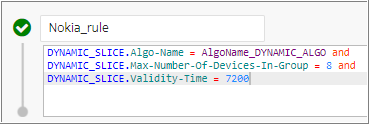
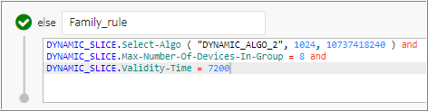
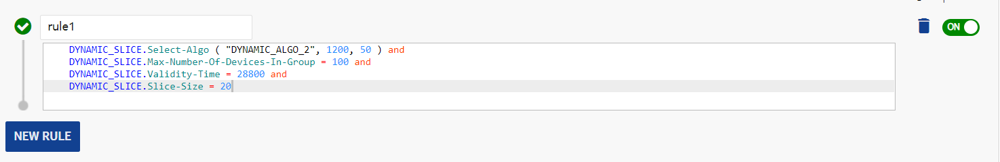
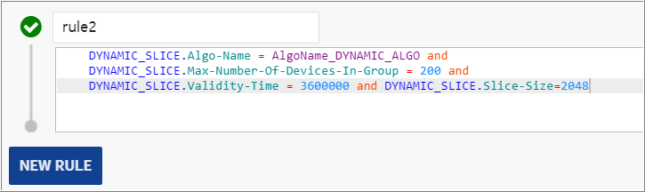

Dynamic algorithm calculates the slice size to be given to a device. The
subsequent sections provide information on the configuration, different
approaches followed for slice computation such as quota management (slicing
profile), dynamic algorithm, and parameterized dynamic algorithm
(DYNAMIC_ALGO_2) used to calculate the slice size.

Notice:
It is not recommended to use slice reduction along with
DYNAMIC_ALGO or
DYNAMIC_ALGO_2 because slice reduction is
itself an algorithm, which reduces the slice size based on upcoming Threshold.
However, if configured together, the behavior might change and it may lead to
unexpected results.
Configuring the dynamic slicing functionality
Configure the desired algorithm in the Quota Management
Profile entity in the SM GUI to configure the dynamic slicing
functionality.

Note:
-
It is recommended not to configure the DefaultAction with
Algo-Name. If configured, then the Algo-Name is
ignored.
-
It is recommended not to configure VT as 0 in the quota management
profile (slicing profile) entity rule. If VT is 0, then it is not
considered as NOK scenario and the final value is read from the
quota management (slicing profile) entity, bypassing the
processing of DefaultAction.
If you want to customize the minimum and maximum slice size values using the
Select-Algo parameter, which is available for the
DYNAMIC_SLICE ruleset that allows you to select the
DYNAMIC_ALGO_2 and contains the following three parameters:
-
Algo-Name: Currently, only
DYNAMIC_ALGO_2 is supported, which is not case
sensitive.
-
Min Slice: It is an optional parameter, which
indicates the minimum slice to be provided.
-
Max Slice: It is an optional parameter, which
restricts the size of slice from algorithm. The max value up to
9223372036854775807 is supported for Max slice value.
If both Min Slice and Max Slice are
not configured, then the DYNAMIC_ALGO_2 algorithm behaves as
DYNAMIC_ALGO.
If customization to the slice size is not needed, then you can select either
DYNAMIC_ALGO, BASIC_ALGO, or BUCKET_ALGO using the
DYNAMIC_SLICE.Algo-Name in the ruleset.
Quota management (Slicing profile)
This is the basic default configuration that is easy to use and covers most
common cases. In case of centralized charging, rules are defined to calculate
the exact value to be used in the dynamic quota management (slicing profile) and
these rules contain algorithms that calculate the dynamic quota slice.
The rules defined in the quota management (slicing profile) entity
provide flexibility to configure the dynamic slicing parameter based on
different configuration. The quota management (slicing profile) entity
is not created at the time of NCC installation and has to be configured. The
default quota management (slicing profile) name must be created with
dynamic profile name configured in the application preference Default Dynamic
slicing profile. You can modify the application preference and change
the default name default_profile to a new name.
Rules defined in the quota management (slicing profile) have the highest
priority. They are checked one-by-one and the first rule to satisfy the
condition is picked up for processing. These inputs are available in the Dynamic
Slice context in the quota management (Slicing profile) entity.
Rules define the slice based on the applicability condition and context. The
rules in dynamic quota management (slicing profile) contain the dynamic
slicing algorithm configured to calculate the dynamic slice size or dynamic
network parameters, such as Validity Time (VT) or Quota Holding Time (QHT). The
applicability condition may use Radio Access Type (RAT) and device ID derived
from AVPs. For example, we can either have a slicing algorithm or a rule for 2G
smart phones and IoT devices, 3G smart phones and IoT devices, and 4G smart
phones and IoT devices. The context can be source context, bucket context, group
context, device context, and session context.
Note:
VT defines the time for which the dynamic quota remains active in the
network, thus controlling the effective allocation of resources. QHT defines
the time for which the call session remains in the idle state. Once QHT
expires, the network reports back the usage and gets a new dynamic quota
allocated.
Types of dynamic slicing algorithm
Following are the types of dynamic slicing algorithm:
-
BASIC_ALGO: The basic algorithm does not consider any dynamic
values. This algorithm returns the static values - Slice Size = 2000, VT
= 35, and QHT is Null.
-
BUCKET_ALGO: This algorithm considers only the first bucket value
if the current bucket value is greater than or equal to the value
preconfigured in the algorithm. For example, if Slice Size = 1000, then
the algorithm returns Slice Size = 1000, VT = 30, QHT is set as Null.
Else, if the current bucket value is less than the slice size, it
returns the default slice size preconfigured in the quota management
profile (slicing profile).
DYNAMIC_ALGO: This algorithm computes the dynamic slice depending
upon the group type, maximum number of devices in group, validity time,
and other inputs.

Parameterized dynamic algorithm
DYNAMIC_ALGO_2
The DYNAMIC_ALGO_2 algorithm facilitates operators to avoid the following
situations by providing two configurable parameters, Minimum Slice
Size and Maximum Slice Size.
-
Consider that an active session is using a bucket and when the bucket
current value reduces such that 20% of volume is available, then
algorithm computes very small slices which leads to high TPS in the
network. To avoid this situation, minimum slice size can be used.
-
There may be device starvation when a session with low volume consumption
blocks its reserved volume data while the second session with higher
volume consumption uses up its Granted Service Unit (GSU). To avoid this
situation, maximum slice size can be used, which allows capping the
maximum slice for the sessions.
The DYNAMIC_ALGO_2 uses the DYNAMIC_ALGO to calculate the slice
size and provides flexibility to configure two additional optional parameters,
Minimum Slice Size and Maximum Slice
Size configured in the quota management (slicing profile) rule.
It ensures that the calculated slice size is in between minimum and maximum
slice size configured. This algorithm is same as DYNAMIC_ALGO with an
addition of two configurable minimum slice size and maximum slice size
parameters.

The value slice size is set based on the configurations made:
-
If you configure only the Minimum Slice Size with
DYNAMIC_ALGO_2, then the default value for Maximum
Slice Size is the total volume of the bucket.
-
If you configure only the Maximum Slice Size, then
the value of Minimum Slice Size is zero.
If you configure the Minimum Slice Size greater
than Maximum slice size or Minimum Slice Size
equal to Maximum Slice Size, then the
configuration is considered as invalid and algorithm performs the
following actions:
-
Does not compute the slice size but returns the static slice
size, if configured in the same rule
-
Otherwise, static slice configured in the quota management
profile (slicing profile) entity is returned
The following figure shows an invalid configuration where the
Minimum Slice Size is greater than the
Maximum Slice Size. In this case, the
DYNAMIC_ALGO_2 is not executed and the static slice size
defined in the rule, which is 20 in the current case is
returned.

-
Following is the valid configuration for Minimum Slice
Size and Maximum Slice Size:
Example: Minimum Slice Size =
10 and Maximum Slice Size
= 200 is a valid configuration.
The algorithm does not compute slice size more than bucket total available
balance. For cases where the bucket available balance is less than
Minimum Slice Size configured, the bucket available
balance is returned and not the Minimum Slice Size.
Note the following points:
-
For the idle sessions where a Payment Gateway reports its usage as zero
by sending USU zero in update request (CCR-U), the DYNAMIC_ALGO_2
returns the Minimum Slice Size configured.
For the idle sessions where a Payment Gateway reports its usage as zero
by sending USU zero in update request (CCR-U) and DYNAMIC_ALGO is
configured, then the DYNAMIC_ALGO returns the static slice size
configured in the rule or static slice size configured in the quota
management profile (slicing profile) entity. The following figure shows
the configuration of static slice size in the rule.

Notice:
The maximum and minimum slices can increase the Transactions Per Second
(TPS). Therefore, it is recommended to configure the algorithm to its best
optimized parameters.
See the Additional information for important points related to quota management (slicing profile)
parameters.